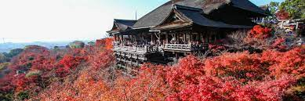

Welcome to the enchanting city of Kyoto, where tradition meets modernity in a harmonious dance. Nestled in the heart of Japan, Kyoto is a captivating blend of historic temples, lush gardens, and bustling city life. The iconic Fushimi Inari Shrine, with its vibrant torii gates, stands as a testament to centuries of rich cultural heritage. The image captures the serene beauty of the Arashiyama Bamboo Grove, where towering bamboo stalks create a natural cathedral of tranquility. Join me on this virtual journey as we explore the timeless elegance and vibrant energy that Kyoto has to offer.

Embark on a visual adventure with this immersive video showcasing the breathtaking landscapes of Banff National Park in Canada. Gaze upon the majestic turquoise waters of Lake Louise, cradled by the towering peaks of the Canadian Rockies. Feel the rush of pristine waterfalls and the serenity of alpine meadows in this cinematic exploration of nature's grandeur. From the stunning Moraine Lake to the awe-inspiring views along the Icefields Parkway, let the video transport you to the heart of Banff's untouched wilderness. Whether you seek adventure or solace, this video captures the essence of a place where the wild beauty of the Canadian Rockies unfolds at every turn.